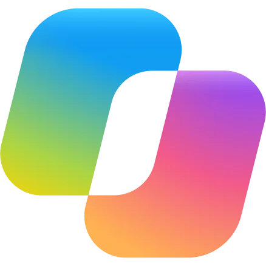

Cuatro líneas de trabajo, un mismo principio: habilitar a tu gente sobre el entorno que realmente usa, con resultados medidos.
Grupos cerrados de tu organización, contenido adaptado a tu realidad. Los ejercicios se hacen sobre tus documentos y procesos, en ambientes controlados.
Dotación operativa y administrativa
Nivelación en Microsoft 365, colaboración e higiene digital. Diagnóstico de brecha previo y rutas por nivel real, no por cargo.

Usuarios de negocio
Todo el ecosistema: Microsoft 365 Copilot, Copilot Chat, Copilot for Sales y for Service. Versiones por función, con ejercicios sobre los documentos y procesos de tu propia empresa.
Analistas y jefaturas de proceso
Cada participante sale con una app o flujo propio construido en ambiente controlado.
Gerencias y jefaturas
Criterio de decisión y casos reales, no herramientas. Para dirigir la adopción de IA, no solo autorizarla.
Perfiles técnicos y power users
Copilot Studio y agentes de IA. Cada participante sale con al menos un agente funcionando.
Programas institucionales por dotación, vendidos por resultado medido — no por sesión. Un camino claro, de la brecha al resultado ante el directorio:
Punto de partida
Diagnóstico de brecha por rolCada persona parte desde su nivel real, no desde su cargo.
Formación
Rutas diferenciadasItinerarios por nivel y función, no un curso único para todos.
Evidencia
Medición pre/postAvance comparable entre áreas y cohortes.
Resultado
Reporte a gerenciaResultados con datos, listos para el directorio.
3–4 SEMANAS · ALCANCE Y PRECIO FIJOS
Mapa de casos de uso priorizados por valor y esfuerzo, brechas de datos y capacidades, riesgos, y hoja de ruta a 12 meses.
INCLUYE CUMPLIMIENTO LEY 21.719
Política de uso aceptable, clasificación de datos, criterios de aprobación de casos y diseño del comité de IA.
RETAINER MENSUAL · 6–12 MESES
Participación en tu comité de IA, revisión de casos de uso y mentoría a tus champions internos.
Diseñamos agentes especializados capaces de ejecutar tareas, responder consultas, analizar información y aplicar las reglas de negocio de tu organización. Una nueva fuerza laboral digital que trabaja junto a las personas.
Un agente para cada proceso. Un ecosistema para toda la empresa.
{{ ag.lema }}
{{ ag.descripcion }}
Ideal para: {{ ag.ideal }}